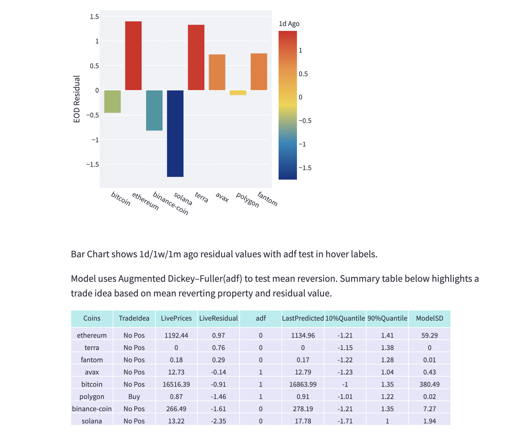
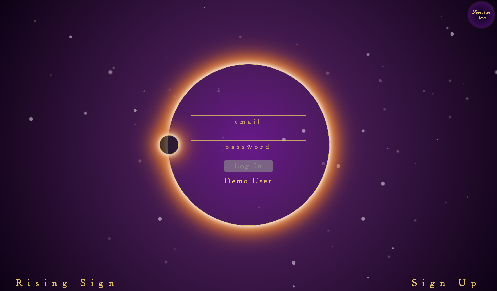
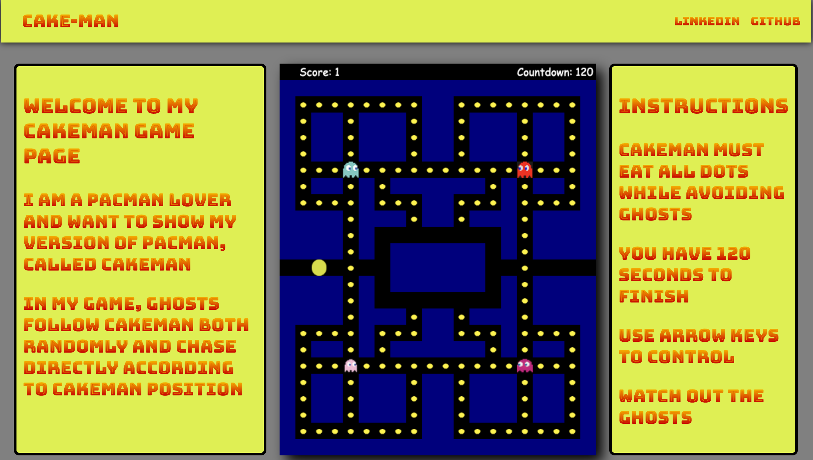

About

Trading in financial markets is similar to problem-solving and making decisions with incomplete information, which got me into trading in the first place. Later in my career, I shifted my focus to the software development space as I was more interested in building tools and systems to solve problems more efficiently.
After working as an emerging markets trader at Morgan Stanley for nine years, I quit my job to pursue a software development career, where I can be more creative and entrepreneurial.
Over the last nine months, I have worked on improving my skills in software development. I created a crypto currency market monitoring tool using Python, completed a well-known full stack developer program in New York and built three projects using JavaScript, React, Redux, Ruby on Rails and MERN stack.
While I still work on consulting Decentralized Finance projects in risk and portfolio management, I have shifted my focus to the software development space and now look forward to building new tools and I am open to opportunities.
Resume
Self Employed
Decentralized Finance Consultant / High Frequency Trader
Jan 2022 - Jul 2022
Provided consultancy to a VC backed seed funded DeFi startup to build treasury and asset management operations. Created risk neutral yield strategies in both DeFi and Centralized Finance(CeFi) space to generate stable returns.
Integrated a Turkish local crypto exchange to open source market-making project with Python and Cython using Websockets, tested liquidity mirroring between global future exchanges vs local spot exchanges.
Morgan Stanley
Emerging Markets Rates and FX Trader
2013 - 2022
Took proprietary positions in the range of instruments as per CEEMEA rate desk mandate and market-making on interest rate swaps. Generated highest profit among CEEMEA rate team in 2019, second highest profit in 2020, and third highest in 2021.
Identified inefficiencies in Morgan Stanley electronic pricing systems and developed a new curve pricing model with quant teams. This provides more competitive pricing to electronic trading clients achieving a significant increase in trading volume.
Utilized unsupervised learning algorithm-Principle Component Analysis(PCA) to Morgan Stanley's proprietary risk system for monitoring of CEEMEA desk portfolio exposures. Improved Morgan Stanley's local currency market presence in the US and Asia client franchises.
Mebook
Mebook is a Facebook clone where users can post and connect with their friends
built with Ruby on Rails, React, Redux, HTML, CSS, PostgreSQL, AWS.
Repo
Crypto Monitor

A relative value analysis tool for crypto markets using Unsupervised Learning, PCA
built with Python, Streamlit, Scikit-Learn, Plotly.
Repo
Rising Sign

Rising Sign is a dating app matches based on zodiac sign built with MERN stack.
Repo
Cakeman

Cakeman is an interactive single-page JavaScript Canvas game inspired by Pacman.
Repo
Skills
JavaScript
Python
React
Redux.js
Ruby on Rails
PostgreSQL
MongoDB
Git
AWS
CSS
HTML5
Bloomberg
Contact